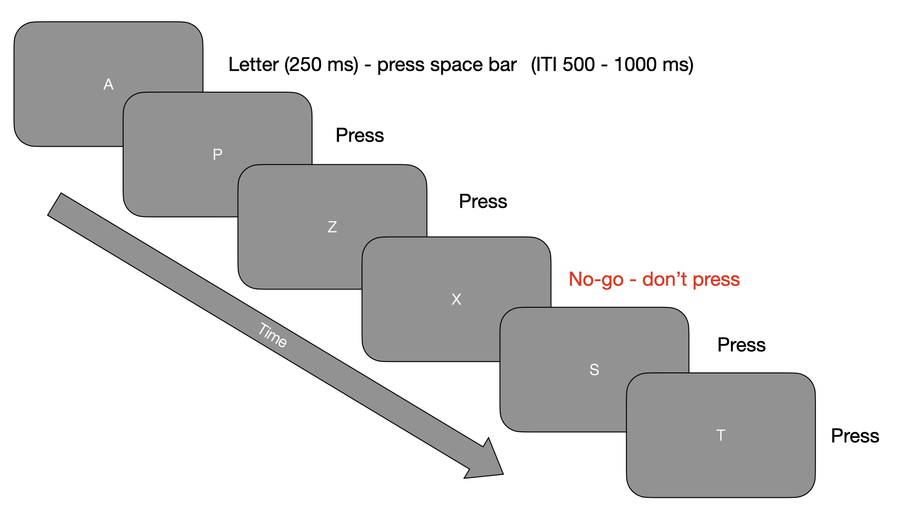
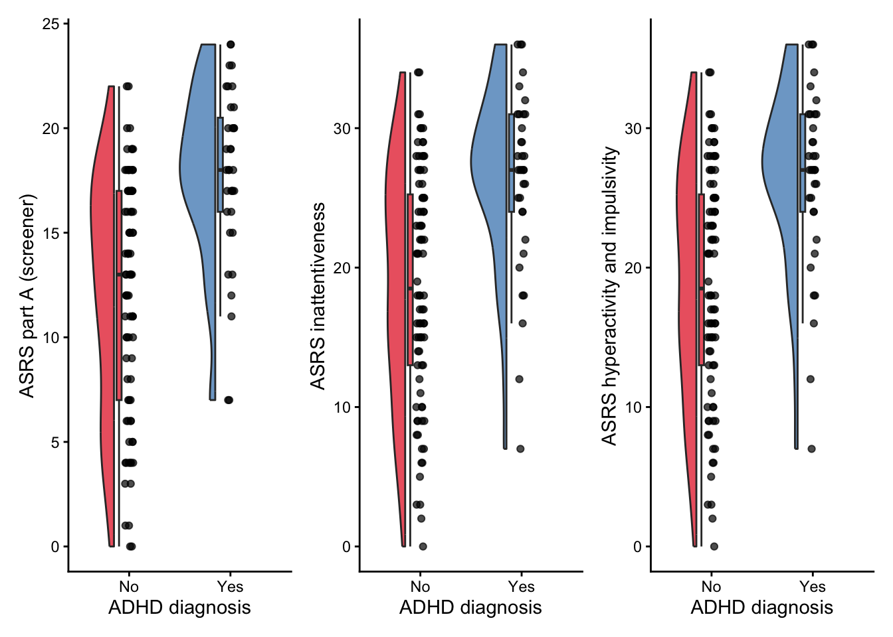
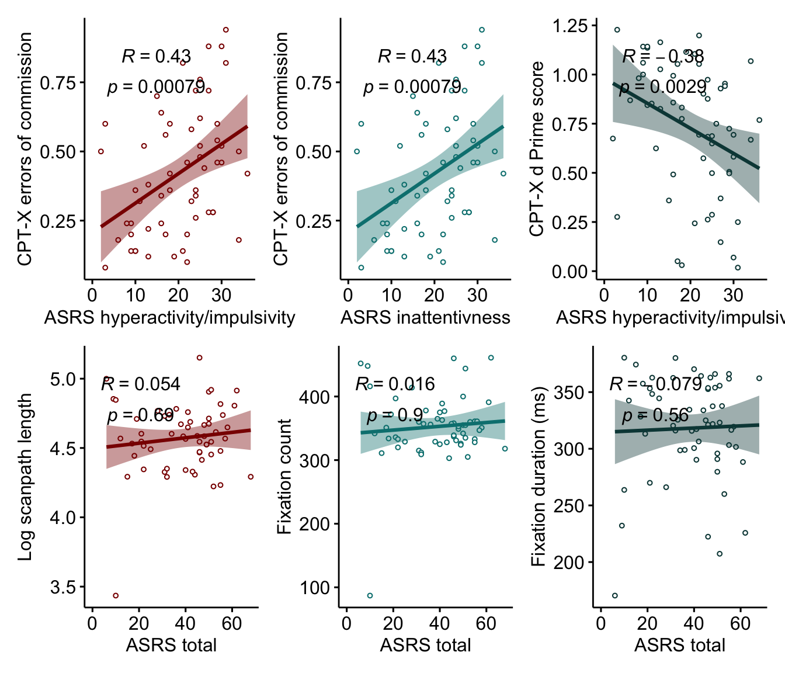

Online behavioural measures predict ADHD symptoms better than eye movements.
Integrating objective measures of ADHD
Deborah Apthorp 2, 
@deborahapthorp
dapthorp@une.edu.au
Katie Crocker 1
kcrocke2@myune.edu.au
1 School of Psychology, University of New England, NSW, Australia
2 School of Medicine and Psychology, Australian National University, ACT, Australia
Introduction
Diagnosis of Attention Deficit Hyperactivity Disorder (ADHD) is currently quite fragmented and ad hoc. Diagnostic criteria rely on either self-report, parent-report or both; the main validated survey for adults is the Adult ADHD Self-Report Scale (ASRS; REF). There is increasing interest in more objective measures to increase precision and reliability in diagnosis; since ADHD is construed as a disorder which affects attention, behavioural tasks which are designed to measure various aspects of attention should be applicable. In addition, eye tracking measures are a promising line of enquiry and have shown differences in lab-based studies between individuals with ADHD and controls [REF]. These have the potential to show early warning signs even in babies too young to perform behavioural tasks. We investigated the potential to use online webcam-based eye tracking and behavioural tasks for remote diagnosis.
Objectives
- Recruit online participants with and without diagnosed ADHD
- Collect survey data (ASRS + demographics)
- Online eye-tracking (RealEye)
- Online behavioural data collection (Continuous Performance Task - Non-X)
Methods
Participants
| No | Yes | p | test | |
|---|---|---|---|---|
| n | 84 | 35 | ||
| age (mean (SD)) | 35.04 (11.22) | 36.06 (12.45) | 0.662 | |
| gender (%) | 0.168 | |||
| Male | 14 (16.7) | 10 (28.6) | ||
| Female | 66 (78.6) | 25 (71.4) | ||
| Other | 4 ( 4.8) | 0 ( 0.0) |
- 118 completed ASRS (Age: 18-60, M = 36; 24 male)
- 58 also completed eye tracking and CPT
- Dropout may have been caused by webcam and browser restrictions
Measures
- Adult ADHD self-report scale (ASRS- ref)
- CPT-noX (Pavlovia/PsychoPy) - errors of omission, errors of commission, d’, mean RT
- Eye tracking (RealEye) - fixation duration, fixation count, scanpath length
Procedure
- Qualtrics survey (information, consent, demographics, ASRS)
- RealEye online eye tracking - while doing practice task for CPT-noX (ask me why)
- CPT-NoX - Pavlovia - see Figure 1

Figure 1: An illustration of the CPT No-X paradigm
Results
Participants who had been diagnosed with ADHD were higher on the ASRS (total and subscales), although there was some overlap - see Figure 2.

Figure 2: ASRS part A (screening section) and subscales for diagnosed and non-diagnosed participants
Because so few participants diagnosed with ADHD completed the eye tracking and CPT-X, and since the study attracted the interest of many who suspected they might have ADHD (reflected in the qualitative data and the proportion who scored above the clinical cutoff for Section A), we thought it would be interesting to look at correlations between the ASRS subscales and the behavioural and eye tracking data (also preregistered). There were strong correlations for the behavioural data, but not for any of the eye tracking measures - see Figure @ref()

Figure 3: Correlations between ASRS measures and behavioural (top) and eye tracking measures (bottom)
How about a neat table of data? See, Table 2:
|
Sepal Length |
Sepal Width |
Petal Length |
Petal Width |
Species |
|---|---|---|---|---|
| 5.1 | 3.5 | 1.4 | 0.2 | setosa |
| 4.9 | 3.0 | 1.4 | 0.2 | setosa |
| 4.7 | 3.2 | 1.3 | 0.2 | setosa |
| 4.6 | 3.1 | 1.5 | 0.2 | setosa |
| 5.0 | 3.6 | 1.4 | 0.2 | setosa |
| 5.4 | 3.9 | 1.7 | 0.4 | setosa |
| 4.6 | 3.4 | 1.4 | 0.3 | setosa |
| 5.0 | 3.4 | 1.5 | 0.2 | setosa |
| 4.4 | 2.9 | 1.4 | 0.2 | setosa |
| 4.9 | 3.1 | 1.5 | 0.1 | setosa |
| 5.4 | 3.7 | 1.5 | 0.2 | setosa |
| 4.8 | 3.4 | 1.6 | 0.2 | setosa |
| 4.8 | 3.0 | 1.4 | 0.1 | setosa |
| 4.3 | 3.0 | 1.1 | 0.1 | setosa |
| 5.8 | 4.0 | 1.2 | 0.2 | setosa |
References